Comments and Errata on Atmospheric and
Oceanic Fluid Dynamics
Geoffrey K. Vallis
April 26, 2007
Below I list some typos and give a few very brief explanatory comments on the book. Most of the
errors should not, I think, cause too much frustration to either the careful reader (who will figure
them out independently) or the casual reader (who won’t notice them), but those marked with a
black diamond may cause a little head-scratching or may need the reader to work a little. These
are collected at the head of the list, and are followed by the typos in page order. Unless stated,
none of the corrections affect the subsequent arguments or derivations in the book. If you find
other errors, or if you think something is poorly explained, please contact the author at
‘gkv-at-princeton-dot-edu’.
-
1.
- ♦Pages 156 and 158. The cancellation of certain boundary terms is poorly explained,
and will be clarified (via the web) eventually. However, the results are correct.
-
2.
- ♦Page 258. This explanation (the informal mechanism) is a little brief and may be
hard to follow, and (6.48) is not transparent without more algebra. A clearer version
will be provided (via the web) eventually.
-
3.
- ♦Page 262, Fig. 6.9. The labels B and C are interchanged.
-
4.
- ♦ Page 399, fig. 9.9 caption. Potential energy and kinetic energy are transposed.
Should read: “…Initially baroclinic processes dominate, with conversions from zonal
to eddy APE and then eddy APE to eddy kinetic energy, followed by the barotropic
conversion of eddy kinetic to zonal kinetic energy…"
-
5.
- ♦Page 266. Above (6.78), the channel extends from 0 to L, not ±L/2. Relatedly, on
page 268, above (6.91), the most unstable wave is that with the gravest meridional
scale, and so the smallest possible meridional wavenumber l. This is not exactly l = 0
except in doubly periodic geometry, but for a wide channel l is very small.
-
6.
- ♦ Pages 426–436. In a few places, ‘across gradient’ is written where ‘across
iso-surfaces’ (or ‘along gradient’) is meant. Page 426, below (10.82), should read: ‘The
flux has a component across iso-surfaces (or parallel to the the gradient) of ϕ, called
the diagradient flux, and a component along isosurfaces (or perpendicular to the
gradient), called the skew flux.’ Similarly, on p. 428, l3, ‘along gradient’ should be
‘along isosurfaces’ (or ‘perpendicular to the gradient’) and on p. 436, item (i) should
read ’across iso-surfaces of buoyancy’ instead of across its gradient. Duh.
-
7.
- ♦ Page 434, eq. (10.135). The inequality needs further explanation, especially as
∂b/∂y may be positive or negative. The reader may ignore it, and just read on.
-
8.
- ♦ Page 535, eq. (PV.1). The term -∂viqi/∂y should be just v′iq′i, as in (12.67). This
typo should be obvious to those who have read the text, but it is still confusing.
Relatedly, the terms on the rhs of (PV.4) should have a minus sign.
_______________________________________________________________________
-
1.
- Page 5, eq. (1.10). Given the convention used in the book, the subscripts on b should
be superscripts (i.e., bx not bx), because they denote components of a vector and not
derivatives.
-
2.
- Page 29, equation on last line. dp should be dα in middle term on rhs.
-
3.
- Page 31, line below (1.139). Should be: θ = θ(η, S, pR) = θ(T, S, p); i.e., p not pR in
last term.
-
4.
- Page 35, Fig. 1.4 caption, line 3. Replace 13.36° C by 10.14° C.
-
5.
- Page 86, line 3. The factor of sin θ should be removed, but (2.187) is nevertheless
correct.
-
6.
- Page 119, problem 2.14. The pressure term, -ρ0-1∇p, is inadvertently omitted from
the right-hand side of the first equation.
-
7.
- Page 139, section 3.6.2. The derivation given is for the flat-bottomed case, which is
not stated explicitly. As an exercise, the reader should perform a similar calculation
with topography, and show that E = (hu2/2 + gh2/2 + gηbh) and F = u(E+ gh2/2).
-
8.
- Page 142. The deformation radius, Ld, is not defined. It is Ld ≡
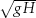
/f. (In the
continuosly stratified case, it is NH/f.)
-
9.
- Page 150, (3.149) and (3.150). Factor of ei(kx+ly) is missing in all the integrands.
-
10.
- Page 156, eq. (3.178). The two right-hand sides should each have a minus sign before
the integral signs.
Eq. (3.179). Factor of 1/2 missing, and the minus sign should be deleted. The factor
of 1/2 should be propagated through to (3.183).
-
11.
- Page 160. Formatting error in problem 3.3. It should read ∇⋅[v(E+ gh2/2)] and not
∇v(E+gh2/2)⋅.
-
12.
- Page 185, eq. (4.109). Should read α-2 ≫ 1 and not α2 ≪ 1. Also, line before (4.113),
Ω = fk should be 2Ω = fk.
-
13.
- Page 196, eq. (5.1). Should read (u, v) ~ U, not (u, v) ~ L.
-
14.
- Page 208, eq. (5.61). Missing subscript 0 on second
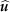
, and second t should be 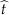
. Also,
missing 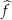
0 in (5.62), although its value is unity.
-
15.
- Page 213, eqs. (5.85a) and (5.88a). Should be a minus sign before last terms on
rhs in each equation, and H2 should be H1 in last term in (5.88a). (The terms are
subsequently dropped).
-
16.
- Page 227, eq. (5.159). H should be H2.
-
17.
- Page 228, eq. (5.168). As written,
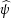
≡(ψ1 -ψ2)/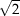
. Also, in (5.170), ∫
dx ≡∫
dA.
-
18.
- Page 237–238 on phase speed. Some sources define the phase velocity to be given
by cp ≡ ωk/K2, where k is the wavevector. The components of the phase velocity
are then given by cpx = ωkx/K2, etc. Defined this way, the phase velocity is a true
velocity. However, its components do not represent the speed at which wavecrests
travel along the coordinate axes. This definition is not common, but be aware of it.
-
19.
- Page 239, eq. (5.225). Last term should have minus sign before it.
-
20.
- Page 256, caption to Fig. 6.5. σ = -ikci not σ = kci.
-
21.
- Page 259 eq. (6.53) and (6.54). The terms vζ should be multiplied by 2.
Eq. (6.55), the two plus signs should both be minus signs, as in (7.17).
-
22.
- Page 263, eq. (6.61). zA instead of zB in fourth term in second expression.
-
23.
- Page 265, after (6.74). Should be ‘the integral must vanish’, or alternatively (and
implying) ‘the integrand must vanish at some point’.
-
24.
- Page 266. It is the background PV gradient that is zero in the Eady problem. Q in (6.75),
which is zero, is the contribution to the basic state PV from the flow and from βy; this
is sometimes called the ‘QG PV’, and does not include the f0 term.
-
25.
- Page 274, l–2. β≠0, not β = 0.
-
26.
- Page 277, surrounding (6.128). K instead of k, so the unstable interval is
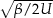
<
K < kd.
-
27.
- Page 275, first sentence of second section. No hats on variables.
-
28.
- Page 279. Better to have primes on the perturbation variables in (6.135)–(6.137).
-
29.
- Page 280, eq. (6.141). cT and cB are interchanged.
-
30.
- Page 284, eq. (6.161) should read: (∂/∂t + U∂/∂x)q′+ (∂ψ′/∂x)(∂Q/∂y) = 0 and
not (∂/∂t+ U∂u/∂x)q′+ (∂ψ′/∂x)(∂Q/∂y) = 0. (Spot the difference.)
-
31.
- Page 285, eq. (6.165). ψ should be ψ′ on lhs, and four lines above.
-
32.
- Page 296. Just before (7.5), ‘If J is also zero’ should be ‘if H is also zero’. Just after (7.5),
‘D and J are zero’ should be ‘D and H are zero’. Just below (7.12) on p. 297, ‘where
J′ is’ should be ‘where H′ is’.
-
33.
- Page 298, first sentence of section 7.2. ‘Eddy flux of potential may be’ should be ‘Eddy
flux of potential vorticity may be’.
-
34.
- Page 300, eq. (7.33). k and l are transposed in the expressions for
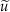
and 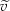
. We should
have: = -il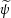
, = ik .
-
35.
- Page 303, l 7. p should be m, twice.
-
36.
- Page 304, eq. (7.60b). w should be w.
-
37.
- Page 310, second bullet. E should be
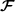
.
-
38.
- Page 311, eq. (7.93). ϕ in first term should be φ.
-
39.
- Page 313, eq. (7.106). Should be F[φ] not F[φ].
-
40.
- Page 314, eq. (7.112c). Middle equation should have minus sign on rhs, and in last
equation v′ should be u′ (the horizontal eddy velocity).
-
41.
- Page 319, eqs. (7.130) and (7.131). Missing factor of ρ0, and, in (7.131) only, f0.
-
42.
- Page 320, just above (7.138). Reference to (7.136) should be to (7.135).
-
43.
- Page 324, eq. (7.141). Subscripts 1 should be subscripts i.
-
44.
- Page 327, eq. (7.157). No minus sign on rhs.
-
45.
- Page 330, first equation in box (7.812). Extraneous s on lhs, next to
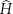
.
-
46.
- Page 339, eq. (8.8). Should be ζ and not ψ in viscous term.
-
47.
- Page 340. 1/L2 should be L2 in (8.11), and k4 should be k2 in (8.12).
-
48.
- Page 345. In fig. 8.3, E(k) should be
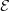
(k).
-
49.
- Page 352 and 353, eq. (8.48) and eq. (8.53).
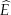
should be E, and 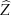
should be Z,
respectively.
-
50.
- Page 352, eq. (8.49).
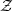
(q) is not the same function as the (k) of (8.44), but it is still
such that the enstrophy is ∫
(q) dq.
-
51.
- Page 355, eq. (8.62a). The integral ∫
dx is the same as ∫
dA, and the viscous term
should have a minus sign. In (8.63)–(8.65), for notational consistency the energy
spectrum should be written (k) and not E(k).
-
52.
- Page 369, eq. (8.105). χ should be χ′ on right-hand side. (χ is a constant.) And replace
‘by η-1/3’ by ‘is η-1/3’ in the second sentence of the paragraph above (8.107).
-
53.
- Page 380, caption and inset to Fig. 9.1. ɛ should be ɛ1/3.
-
54.
- Page 386, eq. (9.24b). a and b are transposed on second term on rhs of definition of
Jacobian. Also, line before (9.27), second ‘barotropic’ should be ‘baroclinic’.
-
55.
- Page 389. 1st text line should read |∇2|~ k2 ≪ kd2 and not ∇2 ~ kd2 ≪ k2.
-
56.
- Page 392, eq. (9.48). D[τ] should be multiplied by -kd-2, but the term is not used.
-
57.
- Page 417. The symbols Kturb and
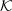
turb are both used for the same quantity, the
turbulent diffusivity.
-
58.
- Page 428, line after (10.100). ‘Divergence’ should be ‘gradient’, twice.
-
59.
- Page 434, eq. (10.132): u should be u in first term. And line after (10.132): ‘Zonally
uniform, small amplitude wave’ should read ‘Zonally uniform basic state and small
amplitude wave’. In (10.133), u′ should be v′. Two lines after (10.134), reference to
(10.133) should be omitted.
-
60.
- Page 437, eq. (10.146). Subscripts on s should be superscripts, as they denote
components and not derivatives.
-
61.
- Page 440, eq. (10.156). The u′ should be outside of the derivative in the third order
term, but this term is promptly neglected.
-
62.
- Page 443, eq. (10.175). v′σ′ should be u′σ′ in third term.
-
63.
- Page 458 eq. (11.4). Need a factor of 1/a on first term of rhs. Also, ∂y should be ∂ϑ on
the following line; alternatively, delete factor of a-1.
-
64.
- Page 460, eq. (11.11). Missing factor -1/g on rhs.
-
65.
- Page 468, item (ii) and (11.40). Note that we are using an equatorial beta plane, on
which f0 = 0. Thus, f = f0 + βy = βy.
-
66.
- Page 471, eq. (11.54). For notational consistency with what follows, δθ should be θ.
-
67.
- Page 471. Line above (11.57), should be m(0) = Ωa2 cos 2ϑ (i.e., ϑ and not ϑ1), as u = 0
at the surface. And (11.57) and (11.58) are missing factors of -θ0 on rhs.
-
68.
- Page 474, cos ϑ should be cos 2ϑ in text at end of second paragraph.
-
69.
- Page 476, eq. (11.64); page 480, eq. (11.73); page 481, eq. (11.75). The eddy flux term
needs a factor of 1/a.
-
70.
- Page 476, eq. (11.66). w should be w.
-
71.
- Page 494, eq. (12.34). Factor of 1/2 missing on right-hand sides. See, e.g., (12.27).
-
72.
- Page 495. The statement ‘illustrating the group velocity property’ is opaque and best
ignored.
-
73.
- Page 504. Line after (12.61b), extraneous -∇ between g′ and η. Also, g′ = g(ρ2 -
ρ1)/ρ0, and not g′= g(ρ1 -ρ2)/ρ0. Relatedly, (12.64) should have a minus sign on
rhs. (It is technically correct as written, because of the way g′ is defined.) Finally, after
(12.63), note that ϕT = ϕ1, and its introduction is unnecessary.
-
74.
- Page 505, eq. (12.71). hi should be hi.
-
75.
- Page 506, eq. (12.77). v1 on rhs should be v2. (Eq. (12.79) is correct.)
-
76.
- Page 507. Eq. (12.83), second term on rhs should have plus sign, not minus sign.
-
77.
- Page 508. Eq. (12.85), q should be q, twice.
-
78.
- Page 511. Sentence above (12.89), polewards and equatorwards should be reversed.
And ‘inequality’ should be ‘equality’ in the line following (12.89).
-
79.
- Page 513. H in (12.95) is not defined nearby, and is H = H1 + H2. Also, the frictional
term in (12.95) and (12.96) has the wrong sign, and the factor of 2 in the first term of
(12.96) is spurious. The terms are not used elsewhere.
-
80.
- Page 514. In (12.98) η should be η, and in (12.99) q should be q.
-
81.
- Page 516. In (12.103), factor of 1/2 should be inside square brackets.
-
82.
- Page 518. Line 2: decreases should be increases. Line 7, westward should be westerly.
-
83.
- Page 531, fifth line after (12.119). Tropopause should be troposphere. Likewise on
page 533, third line after (12.123)
-
84.
- Page 533, fourth line after (12.120), second subscript should be s, not i.
-
85.
- Page 539, endnote 12. The reference to page 12.6.3 should be to page 532, or to section
12.6.3.
-
86.
- Page 555, eq. (13.50). First term, ∂ψ/∂t should be ∂(∂zψ)/∂t.
-
87.
- Page 555–556. We write the topography as hb(x, y) = Re [
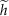
b sin lyeikx], and then in
(13.55), (13.58), (13.65) and the rhs of (13.70), hb should be replaced by b.
-
88.
- Page 586, eqs. (14.5) and (14.14). The quantity WE is not quite the same as the vertical
velocity due to Ekman pumping, although such a notation might imply that. The
Ekman pumping velocity, WEk, is given by (2.296), and so WEk ≈ curlz(τ/f),
whereas WE = curlzτ.
-
89.
- Page 725. Holloway and Hendershott (1986). Year should be (1977).
Acknowledgment: I am grateful to all the readers who have sent in comments. I would
particularly like to acknowledge Roger Berlind for his exceptionally close reading of the
book.